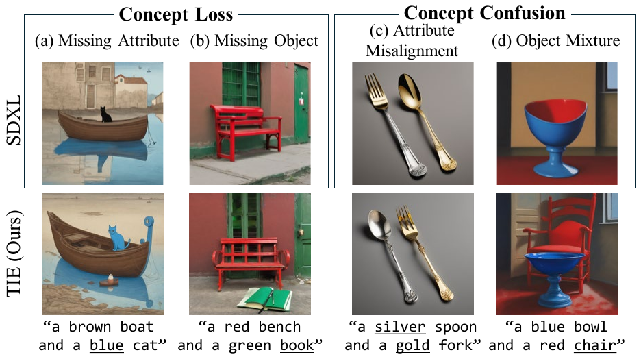
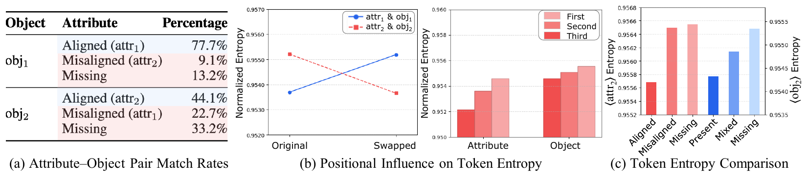
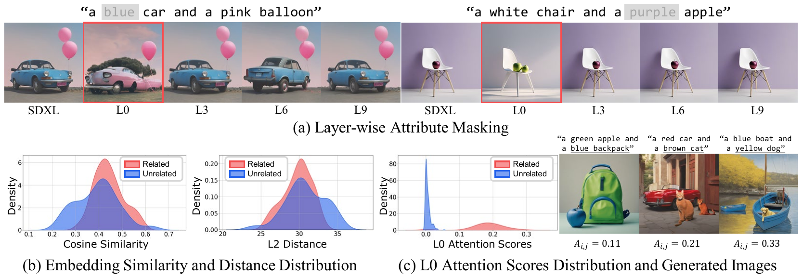
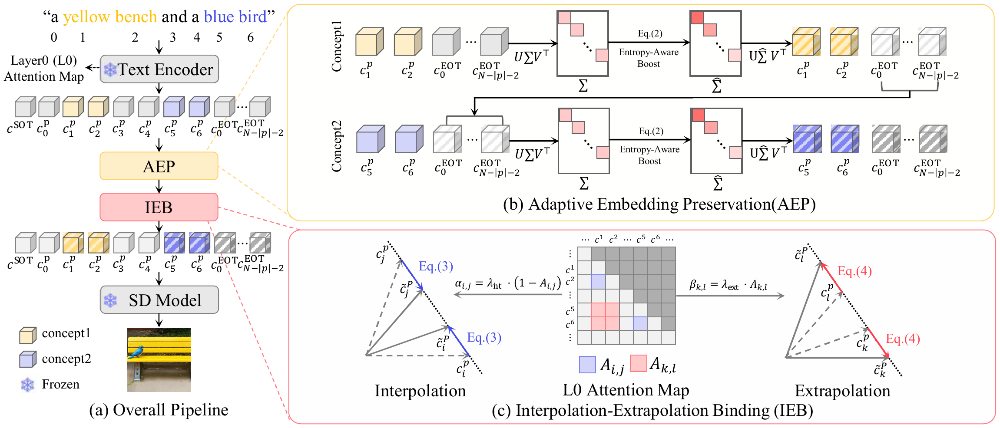
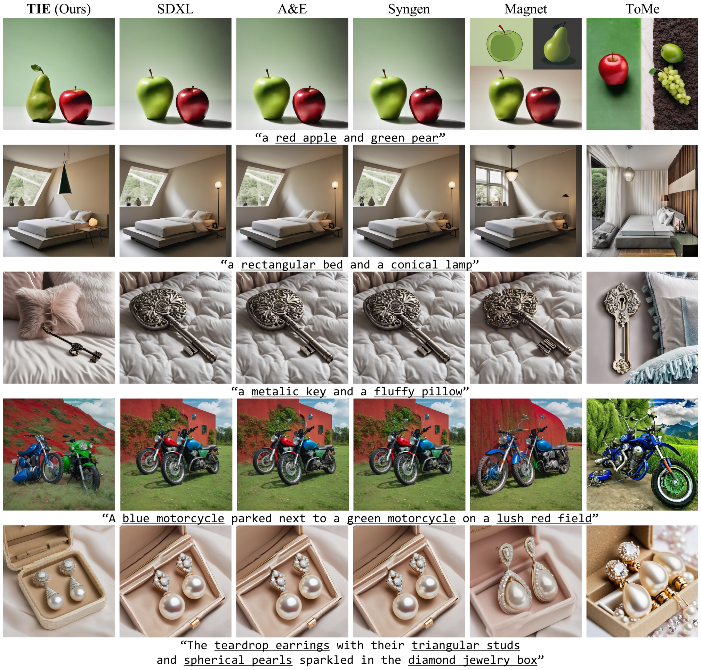
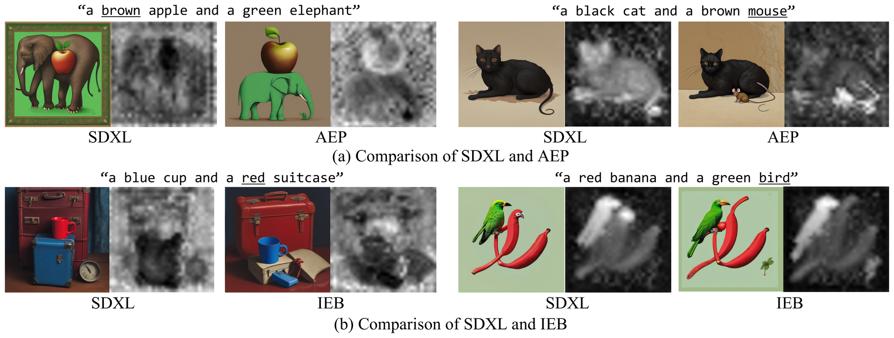
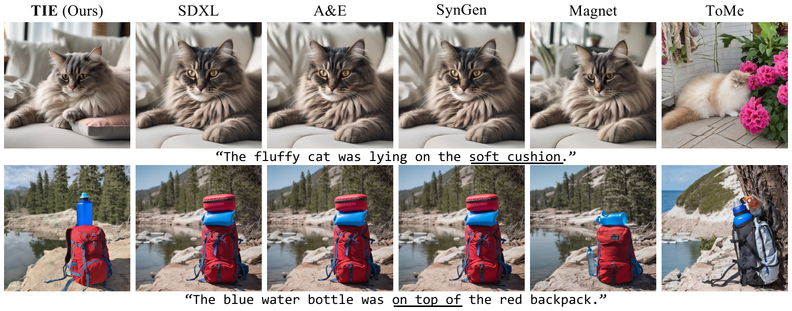
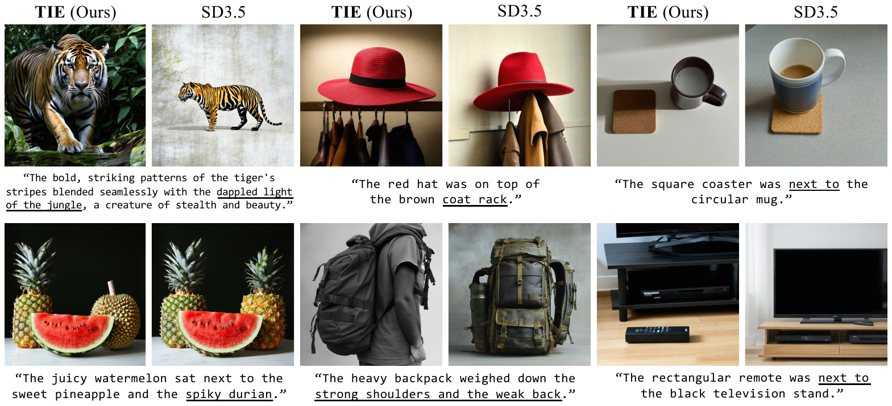
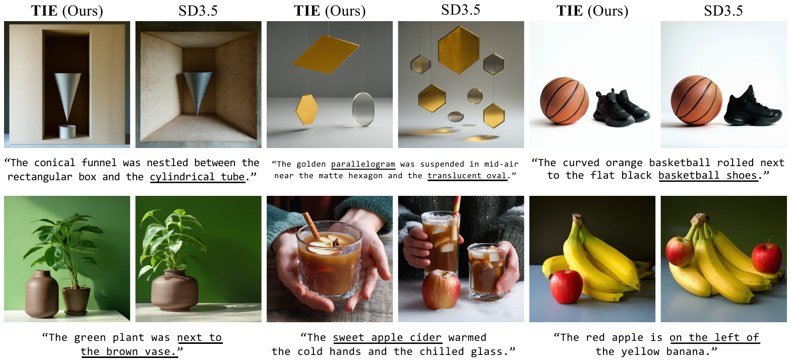

A single-step, training-free text-embedding update that resolves concept loss and concept confusion in CLIP-based text-to-image diffusion models — guided by two internal signals of the CLIP text encoder: token entropy and L0 attention.

Figure 1. Failure cases in simple prompts. SDXL exhibits concept loss (missing attribute / missing object) and concept confusion (attribute misalignment / object mixture). TIE resolves both by updating the text embedding in a single training-free step.
Text-to-image (T2I) diffusion models have advanced notably, but still fail to satisfy prompt conditions, resulting in attribute mismatches and missing objects. These errors normally fall into two categories: concept loss, when an object or attribute goes missing, and concept confusion, when an attribute is assigned to the wrong object or multiple objects blend together. Recent studies suggest these challenges are caused by the limited capacity of the CLIP text encoder to capture fine-grained semantic details.
We conduct an embedding-level analysis and develop a training-free, inference-time solution for both failure modes. We find that (1) concepts mentioned later exhibit higher embedding entropy, reflecting less concentrated representations more often associated with concept loss, and (2) the first CLIP attention layer captures the strength of binding between each object and its attribute.
Guided by these findings, we introduce TIE, a method that improves semantic alignment through a single text-embedding update. TIE addresses concept loss via entropy-aware singular value amplification and resolves concept confusion through interpolation–extrapolation binding based on CLIP attention scores — all in a training-free manner. Extensive experiments show that TIE enhances semantic fidelity in multi-concept scenarios with minimal sampling overhead.
Before fixing anything, we identify two internal signals of the CLIP text encoder that explain concept loss and concept confusion.

Figure 2. (a) The later attribute–object pair is far more prone to being missing or misaligned. (b) Later-position tokens consistently show higher normalized entropy, regardless of the vocabulary itself. (c) Across aligned / misaligned / missing cases, higher token entropy coincides with concept loss.
Previous work observed a positional bias in which later-mentioned objects are more likely to disappear. We find the same holds for attributes.
At the embedding level, this bias is captured by normalized token entropy — a scale-invariant measure that increases as a token's representation spreads across more coordinates, strongly correlating with CLIP's shared anisotropic direction.
This motivates Adaptive Embedding Preservation (AEP): amplify concept tokens adaptively, in proportion to their entropy.

Figure 3. (a) Masking an attribute at L0 is especially damaging; later layers much less so. (b) Final-embedding similarity/distance overlap for related vs. unrelated pairs. (c) L0 attention cleanly separates relationships and predicts rendering quality.
The first self-attention layer (L0) of the CLIP text encoder has an outsized role: masking an attribute at L0 removes it from the generated image, while masking it at later layers barely changes the output.
Conventional embedding metrics (cosine / L2) cannot separate related from unrelated attribute–object pairs. L0 attention instead gives a continuous, distance-controlled binding signal.
This motivates Interpolation–Extrapolation Binding (IEB): tighten correct bindings and push apart incorrect ones, with the step size driven by L0 attention.
TIE combines two complementary components — AEP and IEB — into one text-embedding update, plug-and-play across CLIP-based T2I models with minimal inference overhead.

Figure 4. End-to-end TIE pipeline. Adaptive Embedding Preservation (AEP) amplifies concept tokens according to their entropy; Interpolation–Extrapolation Binding (IEB) adjusts attribute–object pairs using L0 attention. All operations are applied once to the text embedding.
Concepts with higher token entropy are more prone to being lost. AEP amplifies each concept-token embedding using an entropy-aware singular value scaling of its SVD, jointly with the end-of-text (EOT) tokens that are known to carry additional compositional signal. Preserving stronger per-concept representations prevents objects and attributes from being dropped during denoising.
Using L0 attention scores as a continuous binding signal, IEB interpolates each attribute toward its correct object (strengthening correct bindings) and extrapolates it away from incorrect ones (suppressing cross-concept leakage). The step size is adaptive — larger when the L0 signal indicates weak binding, smaller when it is already strong.
Consistent gains across T2I-CompBench and CC-500 for both SD1.4 and SDXL, with inference time comparable to the base model.
| Method | Opt-free | BLIP-VQA ↑ | VQA Score ↑ | NoctOwl ↑ | Time (s) ↓ | |||
|---|---|---|---|---|---|---|---|---|
| Color | Shape | Texture | Det. | Conf. | ||||
| SDXL | — | 0.5940 | 0.5068 | 0.5961 | 0.7695 | 0.4134 | 0.4287 | 9.82 |
| A&EXL | ✗ | 0.5934 | 0.5082 | 0.6040 | 0.7777 | 0.5017 | 0.4661 | 62.72 |
| SynGenXL | ✗ | 0.5948 | 0.5059 | 0.5955 | 0.7724 | 0.3970 | 0.4196 | 22.42 |
| ToMe | ✗ | 0.5161 | 0.3551 | 0.5621 | 0.6439 | 0.3519 | 0.4135 | 42.73 |
| Magnet | ✓ | 0.6833 | 0.5076 | 0.5963 | 0.7857 | 0.5208 | 0.4338 | 10.66 |
| TIE (Ours) | ✓ | 0.6852 | 0.5392 | 0.6454 | 0.8021 | 0.5372 | 0.4376 | 11.86 |
TIE is optimization-free and achieves the best BLIP-VQA across all three attribute types, the highest VQA Score, and the best NoctOwl Detection — while adding only ~2 s over the base SDXL.
| Method | Opt-free | Color ↑ | Shape ↑ | Texture ↑ |
|---|---|---|---|---|
| SD1.4 | — | 0.3652 | 0.3931 | 0.4449 |
| A&E | ✗ | 0.3806 | 0.4168 | 0.4776 |
| SynGen | ✗ | 0.3806 | 0.4128 | 0.4927 |
| Magnet | ✓ | 0.4473 | 0.4137 | 0.4829 |
| TIE (Ours) | ✓ | 0.4565 | 0.4320 | 0.4942 |

Figure 5. Qualitative comparison of TIE against training-free baselines. TIE preserves the full attribute–object composition where baselines drop or swap concepts.

Figure 7. AEP alone recovers lost concepts, IEB alone fixes mis-bindings; combining them gives the most reliable compositional alignment.

Baselines frequently drop or swap concepts; TIE renders both the correct objects and attributes together.

TIE generalizes beyond the Stable Diffusion family — it works on CLIP-based variants out of the box.

Longer multi-concept prompts on SD3.5.
More qualitative examples and ablations will be available in the supplementary PDF.